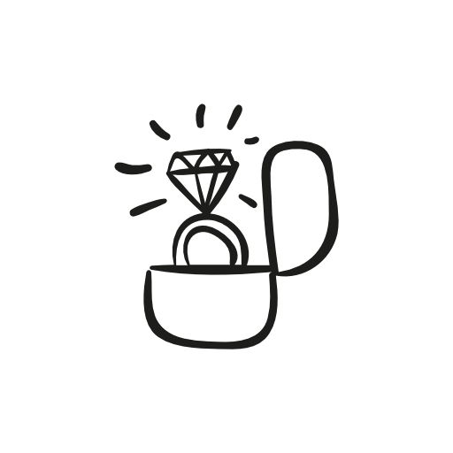

<mat-toolbar class="row">
  <span class="logo" routerLink="/">
  
  </span>
  <app-searchbar></app-searchbar>
  <span class="right_icon"></span>
  
  <button mat-icon-button class="create_icon" (click)="createEvent()">
     <mat-icon>create</mat-icon>
  </button>
  <button mat-icon-button class="menu-icon">
     <mat-icon>menu</mat-icon>
  </button>
</mat-toolbar>
